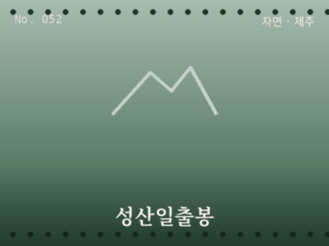
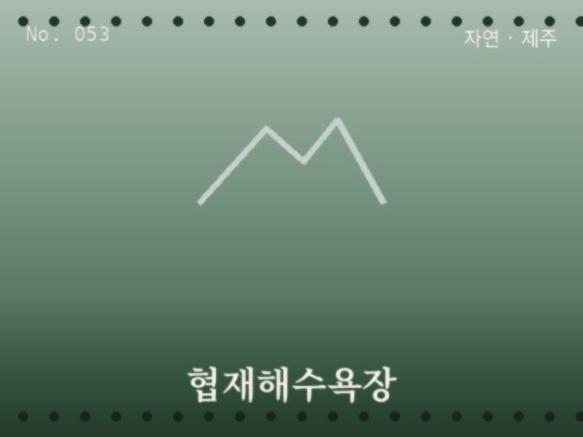
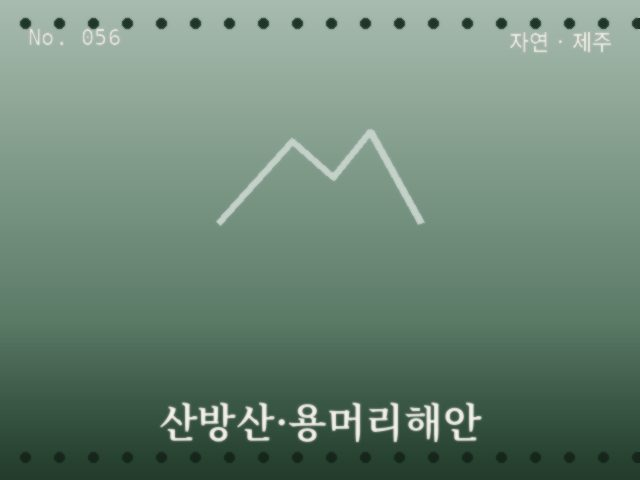
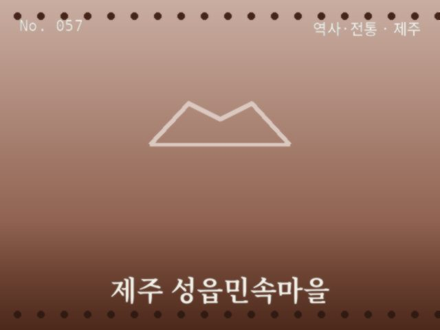
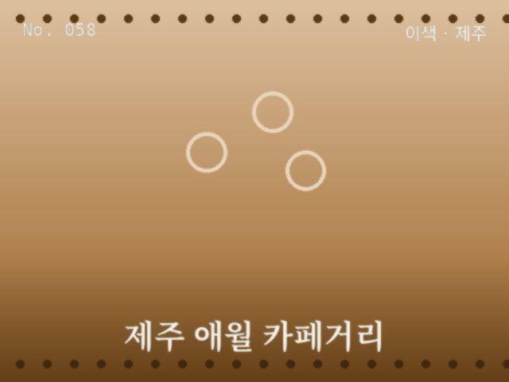
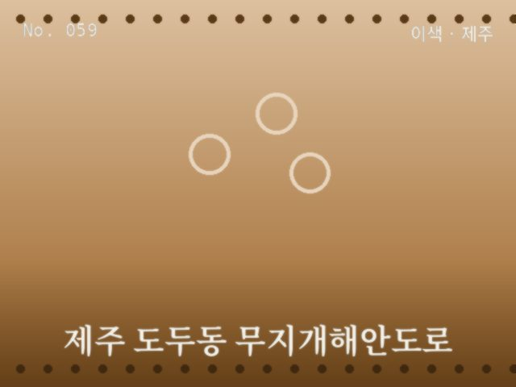
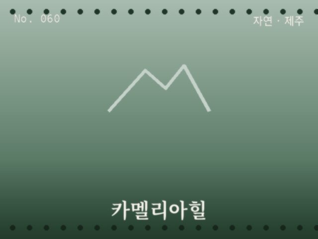

자연
제주
성산일출봉
바다 위에 솟은 거대한 응회구

자연
제주
협재해수욕장
에메랄드빛 바다와 하얀 백사장

도시
제주
제주 이호테우해변
목마 모양 등대가 불을 밝히는 해변

자연
제주
우도
섬 속의 섬, 해안선 드라이브

자연
제주
산방산·용머리해안
기암절벽과 바다가 맞닿은 해안

역사·전통
제주
제주 성읍민속마을
초가지붕과 돌담이 원형 그대로 남은 민속마을

이색
제주
제주 애월 카페거리
해안도로를 따라 늘어선 카페

이색
제주
제주 도두동 무지개해안도로
알록달록한 방파제와 비행기 배경

자연
제주
카멜리아힐
사계절 꽃이 피는 정원